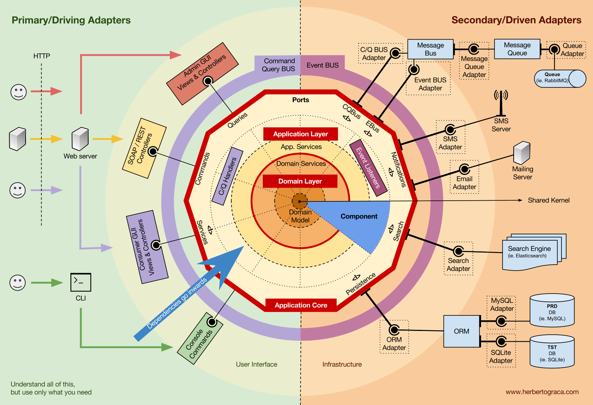

Mapa pojęć, aby zostać architektem programowania
Cezary Walenciuk
Mapa pojęć, aby zostać
architektem programowania
Agenda
- Analiza stanowisk programistycznych
- Co to znaczy, że rozumie technologię
- Idealny programista w pracy
- Idealny programista po pracy
- Wizualizacja systemu
- Wycena zadań i ich kierunek (Drivery)
- Domain Driven Desing czyli architektura w biznesie
- Event Storming
- Style Architektury w korporacji
- Style Architektury w aplikacjach
- Continuous Integration, Deployment & Delivery
- Główne problemy wydajnościowe
- Infrastruktura czyli chmura
Jak zostać *starszym* programistą?
Copyright © Cezary Walenciuk
Copyright © Cezary Walenciuk
Tytuły stanowisk i ich analiza
- Kim jest : Full Stack Developer
- Kim jest : DEV-OPs
- Kim jest : Tech Leader
- Kim jest : Archiktekt
Tytuły stanowisk i ich analiza
- Kim jest : Full Stack Developer
- Kim jest : DEV-OPs
- Kim jest : Tech Leader
- Kim jest : Archiktekt
Wszystko, też zależy od filozofi działania danej firmy
Nie w każdej w firmie jest Archiktekt. Tłumaczymy, że jesteśmy zwini (Agile)
Polecam chodzi na rozmowy kwalfikacyjne na każdym etapie kariery
Copyright © Cezary Walenciuk
Co trzeba umieć, aby zostać *starszym* programistą...
Co trzeba umieć, aby zostać *starszym* programistą poza technologią
 Copyright © Cezary Walenciuk
Jaki byłby idealny programista
Copyright © Cezary Walenciuk
Jaki byłby idealny programista
 Copyright © Cezary Walenciuk
Copyright © Cezary Walenciuk
Copyright © Cezary Walenciuk
Copyright © Cezary Walenciuk
 Copyright © Cezary Walenciuk
Copyright © Cezary Walenciuk
Copyright © Cezary Walenciuk
Copyright © Cezary Walenciuk
Copyright © Cezary Walenciuk
A jaki jest idealny programista po pracy
Copyright © Cezary Walenciuk
Copyright © Cezary Walenciuk
Copyright © Cezary Walenciuk
Copyright © Cezary Walenciuk
Copyright © Cezary Walenciuk
Copyright © Cezary Walenciuk
A jaki jest idealny programista po pracy
Copyright © Cezary Walenciuk
Cykl rozwoju aplikacji
- Implementacja
- Testowanie
- Wdrażanie
- Monitorowanie
- Skalowanie
- Utrzymanie
Różne sposoby patrzenia na architketurę
- Jako zestaw decyzji
- Jako opis struktury
- Jako proces
Pokaż mi mapę pojęć do nauki
- pora na mięso
Starszy programista umię robić wizualizację systemu
Potrzeba wizualizacji architektury
- Aby posiadać mapę nawigacyjną po systemie
- Aby zapewnić wspólne zrozumienie/cel
- Aby przedstawiać strukturę systemu
Jak powinna być wizualiacja
- Łatwa do zrozumienia
- Łatwa do rozbudowy
Wizualiacja
- UML
- ArchiMate
Jakie są problemy z wizualizacją architektury
- Róźne poziomy abstrakcji w jednym diagramie
- Niezrozumiałem diagramy
- Zbyt duże diagramy
Rozwiązanie?
- Operujmy na jednym poziomie abstrakcji per diagram
- Pokazujemy TYLKO co jest na tym poziomie abstrakcji
- Pokazujemy interacje między nimi
C4
- Kod C4 (opcjonalny)
- Komponent C3
- Kontener C2
- System C1
Czyli robimy 4 diagram do każdego poziomu
Copyright © Cezary Walenciuk
Starszy programista i wycenianie zadań
Powody określania stopnia trudności zadań i ich kierunków (Drivery)
- Wymaganie funkcjonalne
- Atrybuty jakościowe (99% dostępność)
- Ograniczenia projektowe
- Konwencje
- Cel projektowy
Co jest ważne w danym zadaniu?
Pamiętaj o cyklu życia systemu
- Implementacja
- Wdrożenie
- Funkcjonowanie
- Serwis
Warto zapisywać swoje decyzję (rekord)
Co ten rekord powinnien mieć:
- Lepiej, żeby było to coś lepszego niż Excel
- Ważny jest widoczne powiązanie pomiędzy zadaniem, a decyzją
Domain Driven Design, czyli architektura a biznes
Copyright © Cezary Walenciuk
Programowanie to :
- Rozwiązywanie problemów dla biznesu
- Ty wiesz "JAK" i "CZYM"
 Copyright © Cezary Walenciuk
Copyright © Cezary Walenciuk
Główna domena
- Co wyróźnia naszą firmę najbardziej
- Odpowiada na pytanie po co ten system powstał
Subdomena : wspierająca
- Wspiera Core Domain
- Jeżeli nie ma powiązania z Core Domain to mamy funkcję o małej wartości dla firmy
 Copyright © Cezary Walenciuk
Copyright © Cezary Walenciuk
Subdomena jako generic subdomian
Dlaczego odkrywanie subdomen jest ważne?
- Zrozumienie działania biznesu
- Podzielenie problemu na mniejsze problemy
Kiedy subdomen nie szukać?
- Zakres jest bardzo mały
- Zakres jest duży,ale bardzo powtarzalny
Kiedy subdomen nie szukać?
- Kilkanaście funkcji biznesowych
- Może subdomeny już są znalezione i poruszamy się po 1 z nich
Copyright © Cezary Walenciuk
Copyright © Cezary Walenciuk
Czym jest Bounded Context?
Czym jest Model?
Copyright © Cezary Walenciuk
Bounded Context? Jak wykryć?
- Autonomia kontekstu
- Szukaj informacji zmieniających się razem
Stworzenie zespół per Bounded Context
Czym jest Model Domenowy?
Implementacja modelu
- Implementacja jest reprezntacją modelu w kodzie i zawiera:
- >>> Dane, czyli stan
- >>> Zachowania
Implementacja modelu czego nie zawiera
- Sposobu komunikacji z bazą danych
- Sposoby komunikacji ze światem zewnętrznym
CONWAY'S LAW
Jak struktura organizacji wpływa na osiągane rezultaty
 Copyright © Cezary Walenciuk
Copyright © Cezary Walenciuk
Copyright © Cezary Walenciuk
Copyright © Cezary Walenciuk
 Copyright © Cezary Walenciuk
Co dalej z tym? CQRS? Event Sourcing?
Copyright © Cezary Walenciuk
Style archiektury (korporacyjnej)
Copyright © Cezary Walenciuk
Co dalej z tym? CQRS? Event Sourcing?
Copyright © Cezary Walenciuk
Style archiektury (korporacyjnej)
które zna starszy programista
Monolit
- System zaimplementowany całościowo jako jedna aplikacja
- Samowystarczalny w zdefiniowany zakresie
- Pozbawiony modularności
Zalety Monolitu
- Szybka i niezawodna komunikacja
- Transakcyjność
- Bezpieczna komunikacja
- Prosta infrastruktura
- Łatwy development na starcie
Wady Monolitu
- Delikatny na zmiany
- Beznadziejna skalowalność
- Trudny w utrzymaniu
- Trudny w zachowaniu struktury
Systemy rozporszony
- System zaimplementowany całościowo jako jedna aplikacja
- Samowystarczalny w zdefiniowany zakresie
- Pozbawiony modularności
Dlaczego system rozproszony
- Skalowalność
- Odporność
- Regulacje i bezpieczeństwo
- Produktywność
Błędne myślenie w systemie rozporoszonego
- Sieć jest niezawodna
- Nie ma opóźnień
- Sieć jest bezpieczna
- Czas stracony na wysłanie poleceń nie istnieje
Szyna integracyjna :
Enterprise Service Bus
RabbitMQ
Wady
- Wąskie gardło które psuje wszystko gdy nie działa
- Ogranicza produktywność rozwoju szyny
Pamiętaj o autonomi biznesowej, czyli rozwiaj produkty niezaleźnie od siebie
Copyright © Cezary Walenciuk
Style archiektury aplikacyjnej
Architketura warstwowa
- Prezentacja
- Logika
- Persystencji
- Moduły wspólne
Architketura warstwowa
- Prezentacja Logiki
- Prezentacja UI
Ile warstwy tak naprawdę potrzebujemy?
Copyright © Cezary Walenciuk

Copyright © Cezary Walenciuk
Architekruta Pipes and Filters
Copyright © Cezary Walenciuk
Jak to jest z tym wdrożeniami
Copyright © Cezary Walenciuk
Continuous Integration, Deployment & Delivery
Czym jest ciągłe dostarczanie (CD)
Copyright © Cezary Walenciuk
Czym jest ciągłe instegracje (CI), czyli kiedy zrobić merge
Fail-Safe, Safe to Fail: czyli problem wdrażania na produkcje
Główne problemy wydajnościowe.
Czyli coś co powinno Ciebie obchodzić?
Główne problemy wydajnościowe
- Podejście do danych
- Komunikacja sieciowa
- Złe wykorzystywanie technologii
Coś zrobliśmy źle : ORM
- Zbyt dużo wczytywania na raz
- zbyt duże obiekty
- Brak użycia DTO
Coś zrobliśmy źle : Podejście do danych
- Nie wszystko musi być transakcyjne
- Wykorzystuj Cache
- Szukaj nawtywnych rozwiązań
Coś zrobliśmy źle : Komunikacja sieciowa
- Brak operacji Batch
- Brak limitu żądań
- Błędne ustawienie limitów połoczeń
Infrastruktura czyli chmura, kontenery, Kubernetes
Coraz więcej chmury?
Jest nieunikniona jak Thanos
Kontenery?
- Separacja infrastruktury
- Dostarczanie aplikacji : wersjowanie paczki, a nie tylko kodu
- Przenoszenie
- Rozwiązanie problemu "u mnie działa"
Kontener, a maszyna wirtualna
- Maszyna wirtualna jest jak : pojedyńczy DOM
- Kontener jest jak : cały blok mieszkań
Kubernetes?
Google Wygrało wyścig
Kubernetes? Co potrafi.
- Automatyzacja wdrożeń
- Automatyzacja skalowania
- Zarządzanie sekretami
- Zarządzanie wolumenami
- Service Discovery
Strategie wdrożeń
- Terminate
- Ramped/rolling
- blue-green
- canary
- shadow
- A/B
Copyright © Cezary Walenciuk
Tytuły stanowisk i ich analiza
- Kim jest : Full Stack Developer
- Kim jest : DEV-OPs
- Kim jest : Tech Leader
- Kim jest : Archiktekt
Copyright © Cezary Walenciuk